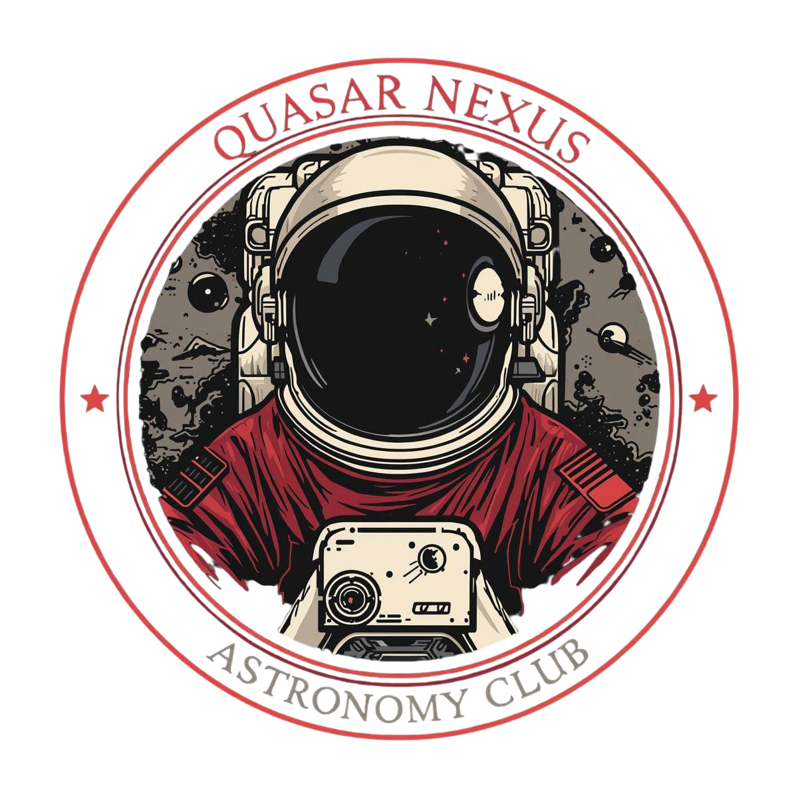
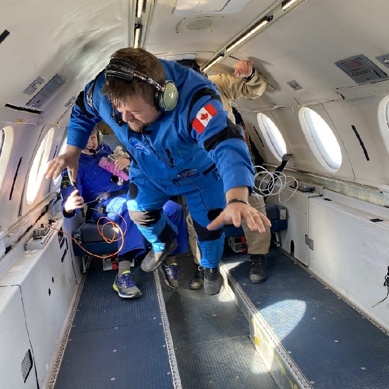
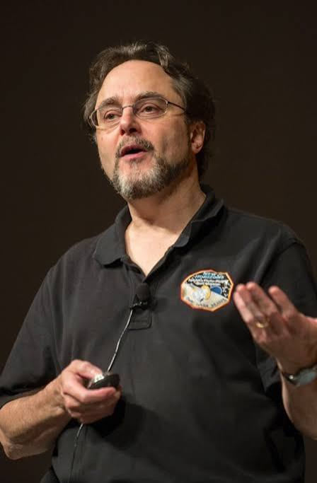

✉️ Get in Touch
Contact the Club
Have questions? Send us a message and we'll get back to you soon

Quasar Nexus Astronomy Club6 mai 2026 • 14:00 • Tunis, Tunisie
Organisé par Quasar Nexus Astronomy Club • Université Centrale Collective Lab (Polytech)
With space professionals and a former NASA astronaut
Immerse yourself in space with Virtual Moon & Stardust tech
Real night-sky observation with the Astronomical Society of Tunisia
Meet the experts, explorers, and visionaries joining us in-person and online
CEO & Founder, Virtual Moon (USA)
Pioneer creating the most detailed VR model of the Moon — a fully immersive digital twin for STEM education and lunar exploration preparation.

CEO & Founder, Stardust
Leading global initiatives in space education, innovation, and workforce development. Making space accessible to every dreamer.
President, Astronomical Society of Tunisia
Leading Tunisian astronomer and passionate science communicator dedicated to bringing the cosmos closer to North Africa.
Industrial & Production Engineer
Expert in industrial engineering contributing innovative perspectives on the practical challenges of space accessibility and production systems.

Renowned Apollo Historian & Author
Author of the definitive book "A Man on the Moon". One of the world's leading historians of the Apollo program.
Former NASA Astronaut & MIT Professor
Veteran of five Space Shuttle missions, including the first Hubble Space Telescope repair. Professor of Aeronautics & Astronautics at MIT.
Université Centrale Collective Lab (Polytech School) • Tunis, Tunisia
quasarnexus.uc@gmail.com • Live-streaming available
Join us at Université Centrale Collective Lab in Tunis
Université Centrale Collective Lab (Polytech)
Tunis, Tunisia
May 6th, 2026
2:00 PM - 6:00 PM (Local Time)
Easily accessible by public transport
Parking available on campus
Have questions? Send us a message and we'll get back to you soon